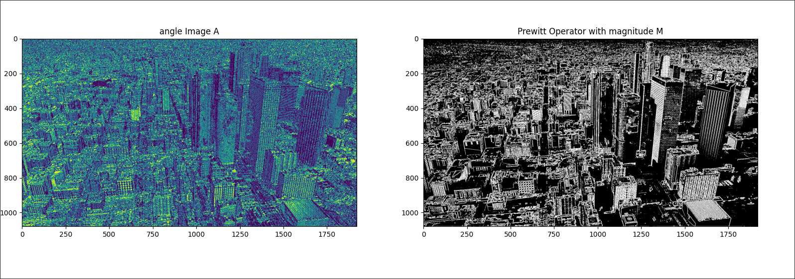

Problem 2.2
Investigate higher order derivatives for edge detection
to investigate higher order derivatives we can use Prewitt operators and compute convolution.
for first order derivative it has following form
with kernel
and similar idea is applied to higher order derivatives with kernels
- first calculate vertical and horizontal Prewitt operators by convolution
and then calculate magnitude M with is "fusion" of both operators to get the final result
and to get even more clear image we can use Thresholding to get following result

Potential of higher order derivatives for extracting other features
we can even get additional information by calculating angle of the edge.
by calculating following expression
the color of the edges corresponds to the angle. For example, an angle of 0 is red, and an angle of

and following implementation
import numpy as np
import skimage.io as io
import skimage.color as color
import matplotlib
from scipy.signal import convolve
matplotlib.use("TkAgg")
import matplotlib.pyplot as plt
def convert_to_rgb_format(img):
if img.shape[2] == 4:
img = color.rgba2rgb(img)
return img
def convert_to_gray_scale(img):
return color.rgb2gray(img)
def threshold(g, T):
h, w = g.shape[:2]
for j in range(h):
for i in range(w):
if g[j, i] >= T:
g[j, i] = 1
else:
g[j, i] = 0
return g
def prewitt_operator(g):
h_x = np.array([[1, 0, -1], [1, 0, -1], [1, 0, -1]])
h_y = np.array([[1, 1, 1], [0, 0, 0], [-1, -1, -1]])
grad_x = convolve(g, h_x, mode="same")
grad_y = convolve(g, h_y, mode="same")
M = np.sqrt(grad_x**2 + grad_y**2) # NOTE: magnitude M
A = np.arctan(grad_y / grad_x) # NOTE: angle A
return M, A
img = io.imread("./sky.png")
img = convert_to_rgb_format(img)
g = convert_to_gray_scale(img)
M, A = prewitt_operator(g)
plt.figure(figsize=(10, 5))
plt.subplot(1, 2, 1)
plt.imshow(img)
plt.title("Original Image")
plt.subplot(1, 2, 2)
plt.imshow(threshold(M, 0.5), cmap="gray")
plt.title("Prewitt Operator with magnitude M")
plt.show()
Interactive Graph